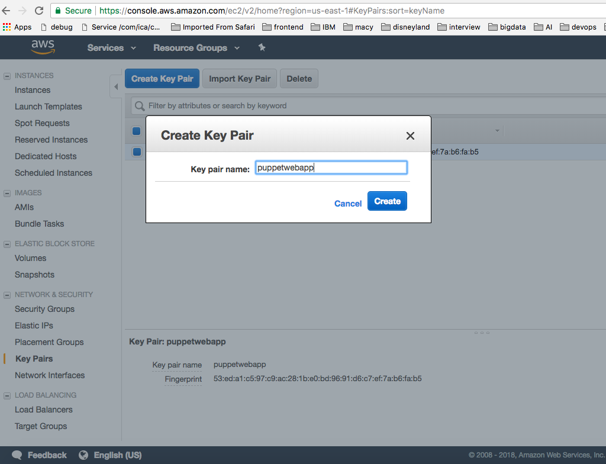
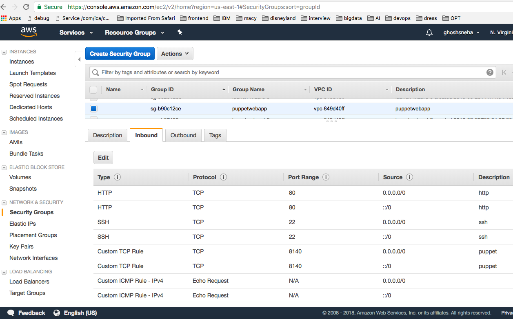
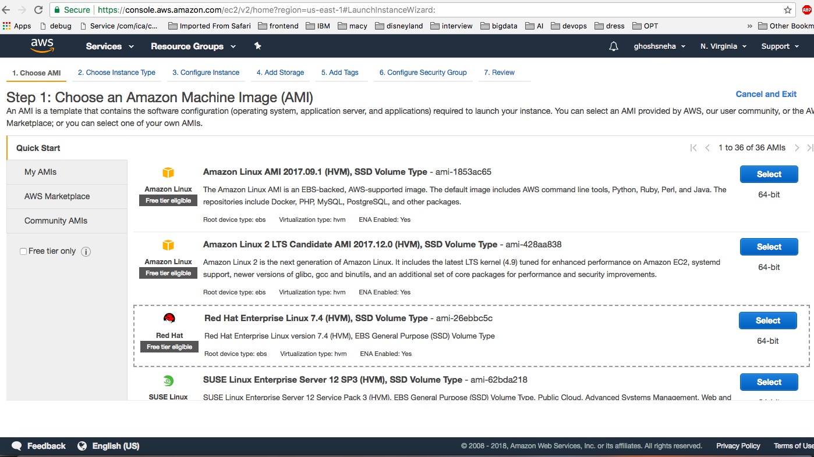
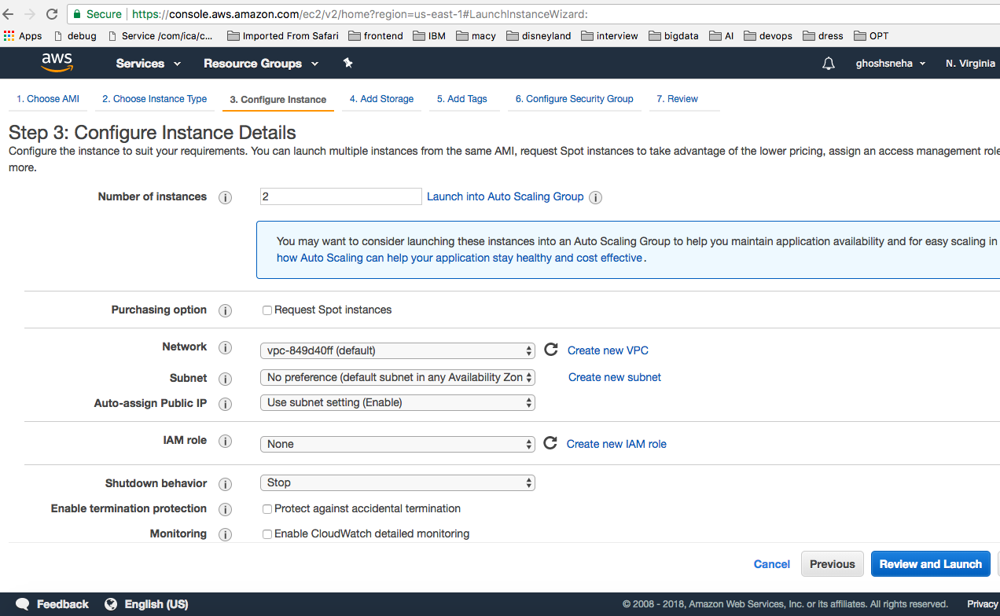
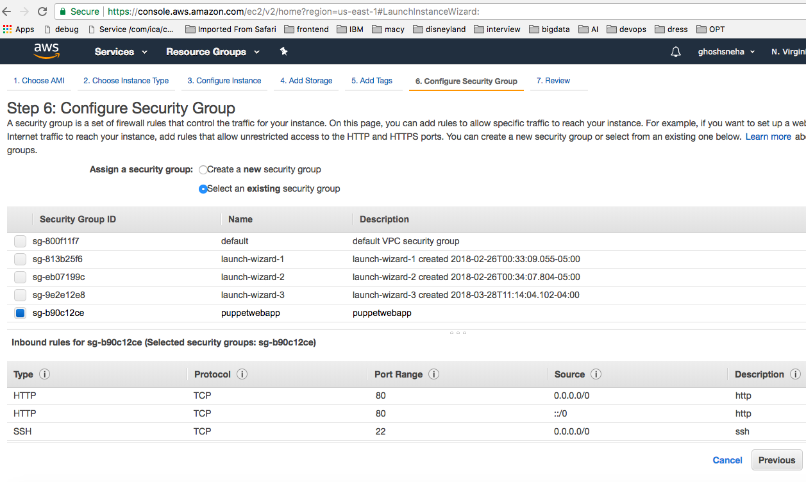
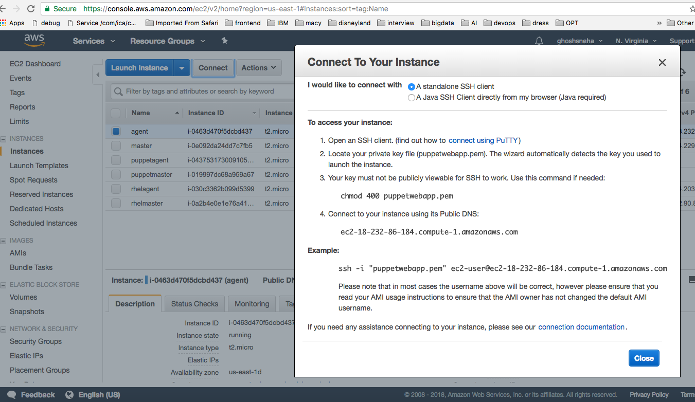
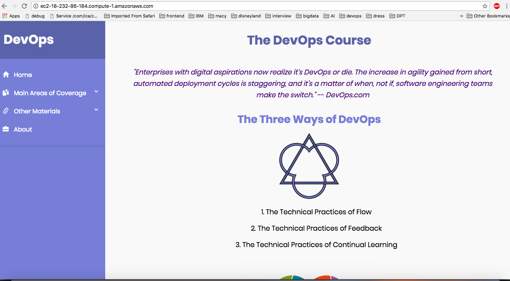

Steps to deploy the website on Amazon EC2
instances using puppet
Configuration
We have used client/server architecture having one
puppet master and one puppet agent.
Steps
KeyPair -
Login to Amazon AWS console. Go to Network and Security
and create key pairs to login into EC2 instances from
local machine.

Security Group -
Create Security Group to enable ports for http, ssh, tcp
and icmp. This group will be associated with the EC2
instances.

Launch EC2 Instances -
Go to Instances and click on "Launch Instance". On the
next screen select "Red Hat Enterprise Linux" image.

Click "Configure Instance Details" and choose number of
instances 2 (master and agent).

Go to next and on Step 6: "Configure Security Group"
select the security group created before and then launch
the instances.

Wait for the instance state change to running. Give names to
instances (master, agent).
Next connect to the instances using ssh following the steps
in connect box as shown below -

Master Configuration
Configure hostname for master node as:
[root@master ~]# hostname master.devops.org
Add entry for agent in hosts file of master:
[root@master ~]# vi /etc/hosts
ip-address-agent agent.devops.org agent
Puppet can be installed from the yum.puppetlabs.com
package repository using below command:
[root@master ~]# yum -y install https://yum.puppetlabs.com/
puppetlabs-release-pc1-el-7.noarch.rpm
Creating symbolic link to make puppet available on
command line:
[root@master ~]# ln -s /opt/puppetlabs/bin/puppet*
/usr/local/bin/
For agents to connect to the puppet master server, it
must allow incoming connections on port 8140:
[root@master ~]# iptables -A INPUT -m state --state
ESTABLISHED,RELATED -j ACCEPT
[root@master ~]# iptables -A INPUT -m state --state NEW -p
tcp --dport 8140 -j ACCEPT
[root@master ~]# iptables-save
[root@master ~]# iptables -L -v
In the file /etc/puppetlabs/puppet/puppet.conf add
below line in [master] section:
dns_alt_names = master.devops.org, master
Generate CA certificate and the puppet master
certificate with the appropriate DNS names:
[root@master ~]# puppet master --no-daemonize --verbose
Enable and start puppetservice on master:
[root@master ~]# systemctl enable puppetserver
[root@master ~]# systemctl start puppetserver
Agent Configuration
Configure hostname for agent node as:
[root@agent ~]# hostname agent.devops.org
Add entry for master in hosts file of agent:
[root@agent ~]# vi /etc/hosts
ip-address-master master.devops.org master
Creating symbolic link to make puppet available on
command line:
[root@agent ~]# ln -s /opt/puppetlabs/bin/puppet*
/usr/local/bin/
Enable and start puppet on agent node:
[root@client ~]# systemctl start puppet.service
[root@client ~]# systemctl enable puppet.service
Certificates
Certificate request from agent:
[root@agent ~]# puppet agent --test
--ca_server=master.devops.org
On the puppet master server view the certificates:
[root@master ~]# puppet cert list
On the puppet master server sign the certificate from
agent:
[root@master ~]# puppet cert sign agent.devops.org
Deploying website on agent
Create manifests for setting up apache server on agent:
Go to path "/etc/puppetlabs/code/environments/production/
manifests" on master node and copy file
apache.pp
Create manifests for setting up git and continuous
integration on agent:
Go to path "/etc/puppetlabs/code/environments/production/
manifests" on master node and copy file
site.pp
Install the puppet vcsrepo module for continuous
delivery on master node:
[root@master ~]# puppet module install puppetlabs-vcsrepo
--version 2.3.0
Configure the time interval for continuous delivery:
Edit file "/etc/puppetlabs/puppet/puppet.conf" and add below
lines of code on agent node -
server = master.devops.org
runinterval = 30
Run the catalog to setup agent node:
[root@agent ~]# puppet agent --test
--ca_server=master.devops.org
After following the above steps, the website is deployed
on agent node and can be accessed by using the agent ip
address or dns name. It should open the deployed website as
shown -

If there are any new commits made on git the website will
be continuously refreshed with the changes.